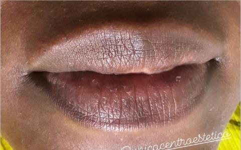
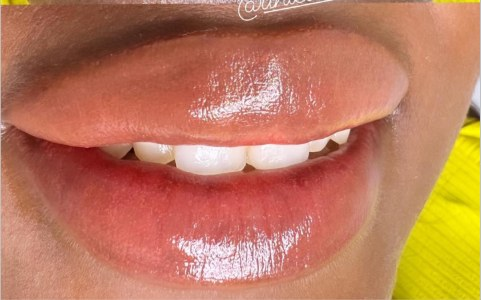
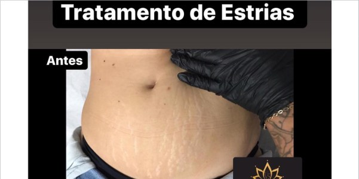
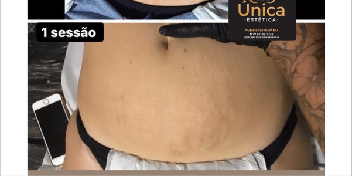
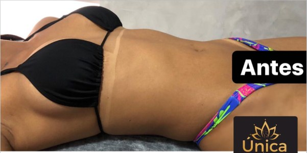
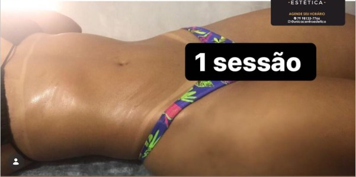

Chega de esconder
o corpo.
Manchas, estrias, áreas escurecidas e flacidez têm solução. Na Única Estética, cada protocolo é pensado para o seu caso — e o resultado aparece já nas primeiras sessões.
Aqui não existe protocolo padrão para todo mundo
Você chega, conta o que te incomoda, a gente avalia e monta o tratamento certo para o seu caso. Sem enrolação, sem milagre prometido — só resultado que você consegue ver e fotografar.
Resultado visível nas primeiras sessões
Você já sai da clínica sentindo a diferença — sem esperar meses para ver algo acontecer.
Protocolo personalizado para o seu caso
Não um tratamento genérico que serve para qualquer pessoa — um plano montado para o que você especificamente precisa.
Profissionais com anos de prática real
Atendimento realizado por esteticistas treinadas com anos de experiência em Aracaju — não por quem está aprendendo no seu caso.
Tecnologia atualizada que entrega resultado
Equipamentos certificados — incluindo Criolipólise recém-adquirida — para que o seu tratamento tenha o que há de mais eficaz.
Atendimento que cuida de verdade
Você não é mais um número na agenda. Nossa equipe conhece seu histórico e acompanha sua evolução sessão a sessão.
Avaliação gratuita antes de qualquer decisão
Você sabe exatamente o que vai ser feito e quanto vai custar — antes de pagar qualquer coisa.
7 anos de resultados documentados
Antes e depois reais de clientes reais — publicados no nosso Instagram com mais de 52 mil seguidores.
Tratamentos disponíveis
Procedimentos corporais e faciais para cada necessidade — com resultado documentado e protocolo personalizado.
Melasma Control
Tratamento específico para manchas de melasma com resultado visível em 12 a 15 dias. Um dos protocolos mais procurados da clínica.
Resultado em 12–15 diasTratamento de Estrias
Redução visível com indução de colágeno e elastina — o tecido se reorganiza de dentro para fora. Melhora documentada desde a 1ª sessão.
Melhora desde a 1ª sessãoClareamento a Laser
Laser com peeling de carbono para clarear axila, virilha e entrepernas de forma segura. Pele mais clara, uniforme e sem necessidade de esconder.
Promoção: R$130/sessãoMicropigmentação Labial
Para lábios apagados, assimétricos ou escurecidos. Resultado natural que realça o contorno sem exagero — dura anos e dispensa maquiagem diária.
Resultado duradouroCriolipólise
Tecnologia de congelamento de gordura localizada — sem cirurgia, sem recuperação. Elimina células de gordura em regiões que não respondem ao exercício.
Novo na clínicaMassagem Modeladora
Técnica profunda que reduz medidas, combate celulite e elimina retenção de líquido. Potencializa os resultados corporais quando combinada com outros protocolos.
Redução de medidasOutros tratamentos disponíveis:
Qual tratamento é certo para mim?Como é o processo
Simples, sem pressão e no seu tempo.
Você nos chama no WhatsApp
Manda uma mensagem, nos conta o que te incomoda. Pode mandar foto se quiser — já conseguimos ter uma ideia inicial e te orientar antes mesmo da avaliação.
Agendamos sua avaliação gratuita
Escolhemos juntos o melhor horário para você — de segunda a sábado. Sem taxa de avaliação, sem compromisso de compra.
Avaliamos e montamos seu protocolo
Na clínica, analisamos seu caso com atenção e apresentamos o tratamento indicado com previsão de resultado e número de sessões. Sem pressão.
Você decide — a gente cuida
Se fizer sentido para você, agendamos o início do tratamento. Se precisar de tempo para decidir, tudo bem também. Aqui não tem pressão.
Resultados que você pode ver
Fotos reais de clientes reais — sem filtro, sem edição. O resultado fala por si.

Antes
DepoisMicropigmentação Labial
Neutralização + micropigmentação · resultado duradouro

Antes
DepoisTratamento de Estrias
Resultado após 1 sessão · indução de colágeno

Antes
DepoisClareamento a Laser
Resultado após 1 sessão · virilha
Veja mais resultados reais no nosso Instagram
@unicacentroesteticoPor que a Única Estética
Há muitas clínicas em Aracaju. Aqui está o que faz a diferença na prática.
7 anos cuidando de mulheres em Aracaju
Não é clínica nova testando protocolo no seu problema. São 7 anos de casos reais, ajustes de técnica e resultados documentados. Você chega em um lugar onde já sabem o que funciona.
Resultado que você vê — e consegue fotografar
O Melasma Control mostra resultado em 12 a 15 dias. O clareamento a laser já na primeira sessão. Não prometemos transformação em meses se você pode ver a diferença em dias.
Tecnologia atualizada — incluindo Criolipólise
A clínica investe continuamente em equipamentos. Com a chegada da Criolipólise, você tem acesso em Aracaju à tecnologia de ponta para gordura localizada, com profissional que conhece seu histórico.
Equipe estável — você não começa do zero toda vez
As profissionais da Única Estética têm anos de clínica juntas. Não é rotatividade de esteticista a cada visita. Quem acompanha seu tratamento conhece seu caso e sabe exatamente onde chegamos.
A clínica que ensina outras profissionais
A Única Estética ministra cursos para esteticistas de outros estados. Isso significa que o nível técnico da equipe é referência — você não é atendida por quem está aprendendo, mas por quem já ensina.
A Única Estética nasceu com uma convicção simples
Toda mulher merece ter acesso a tratamentos que realmente funcionam, feitos por quem se importa com o resultado.
Desde que abrimos em Aracaju, centenas de mulheres passaram pela clínica — cada uma com uma história, um incômodo e uma razão para estar aqui. Estrias de pós-parto. Manchas que não saíam com nenhum creme. Áreas do corpo que causavam vergonha há anos.
E, um a um, esses casos foram tratados, documentados e transformados em confiança de volta.
Hoje, a Única Estética é referência em Aracaju — com equipe estável, tecnologia atual e um compromisso que se mantém desde o início: cuidar de verdade de quem confia em nós.
Dúvidas frequentes antes de começar
Respostas honestas para quem ainda está avaliando.
Todos os procedimentos da Única Estética seguem protocolos consolidados ao longo de 7 anos de prática. Antes de qualquer tratamento, fazemos uma avaliação do seu caso — e só indicamos o que é adequado para você. Casos com histórico de sensibilidade ou condição específica são avaliados com atenção redobrada. Em 7 anos de atendimento, nosso histórico fala por si.
Depende do procedimento. O tratamento de estrias tem uma sensação de agulhada no momento — dura poucos minutos e a vermelhidão passa em dias, a depender do organismo. Já o clareamento a laser e o Melasma Control são procedimentos suaves, sem tempo de recuperação. Na avaliação, explicamos exatamente o que esperar de cada um — sem surpresa.
A avaliação é gratuita. Você vem, a gente analisa, e apresenta o tratamento indicado para o seu caso específico — com previsão de resultado. Você só decide se quer continuar depois de entender o que será feito e o que pode esperar. Não tem taxa de avaliação, não tem compromisso de compra.
Os valores variam por procedimento e número de sessões necessárias. O clareamento a laser, por exemplo, está por R$130 a sessão. Para os demais tratamentos, o valor é avaliado caso a caso — por isso a avaliação existe. Se quiser uma ideia antes de vir, pode mandar uma foto da área pelo WhatsApp e já te orientamos.
Perguntas frequentes
Recomendamos sempre começar pela avaliação — especialmente para Melasma Control, Tratamento de Estrias e Criolipólise. Assim a gente monta o protocolo certo para o seu caso e você não paga por sessões desnecessárias. A avaliação é gratuita.
Depende do procedimento e da extensão do problema. Para manchas de melasma, resultado aparece em 12 a 15 dias. Para estrias, 1 sessão já mostra melhora — o número total varia por profundidade e quantidade. Na avaliação, você sai com uma estimativa real para o seu caso.
A clínica fica na Av. Augusto Maynard, N84, no bairro São José, em Aracaju/SE. Atendemos de segunda a sábado, por agendamento. Para marcar, é só chamar no WhatsApp (79) 98133-7766.
Sim — e recomendamos! Para estrias, manchas e áreas de clareamento, uma foto já ajuda a ter uma ideia inicial do tratamento indicado e do investimento aproximado. Manda sem cerimônia.
Para procedimentos como Camuflagem de Estrias e Micropigmentação Labial, o resultado é duradouro. Tratamentos como Melasma Control exigem manutenção com protetor solar e, em alguns casos, sessões periódicas — o sol é o maior inimigo do melasma. Na avaliação, explicamos o que esperar de cada protocolo a longo prazo.
Aceitamos Pix e cartão. Para informações sobre parcelamento e condições especiais, entre em contato pelo WhatsApp que informamos todas as opções disponíveis.
Você já sabe o que te incomoda.
A gente sabe como tratar.
O próximo passo é mais simples do que parece.
Agendar minha avaliação gratuitaAv. Augusto Maynard, 84
São José · Aracaju/SE
Segunda a Sábado
Por agendamento